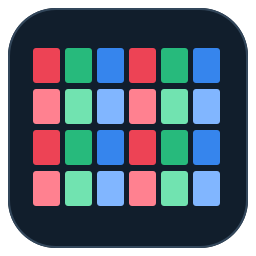

Preparing…
Version 3.15
LED cabinet and module layouts, custom labels, shared canvas and exports.
Effects: the Effects tab adds an animated overlay to any existing style. Enable effects, then choose Pulse, Rotating sweep, Moving wave or Cross wipe. Effects apply across the entire canvas; Each layout center starts the effect separately inside each layout. Project/corner origins use the full canvas bounds. Direction applies to waves; origin applies to pulses and sweeps. Controls adjust color, opacity, glow, cycle speed, line width, pulse count/style, trail and fill. Pause freezes the preview; Restart begins the cycle again. Project files retain effect settings.
Snap to layouts: while moving near another layout, its edges attract the moving layout within 10 screen pixels. Layouts can join side by side or top to bottom and align their top, bottom, left or right edges. Nearby layout edges take priority over the grid, even when those edges are between grid lines. Snap to layouts works independently of Show grid and Snap to grid, including when typing coordinates. Turn it off for unrestricted placement. Undo restores the previous position.
Canvas grid: Show grid displays an alignment grid behind the layouts. Snap to grid rounds a moved layout’s top-left X/Y coordinates to the spacing, including typed coordinates. Turn snapping off for exact free placement. The grid is anchored at canvas (0,0), handles negative coordinates and stays aligned when zooming or panning. At small zoom levels, only every few grid lines are drawn; snapping still uses the specified spacing. Toggling the grid or snap does not move existing layouts. Grid settings are saved with the canvas. The alignment grid is not exported.
Animated video: Export → Animated video records the selected export scope for 1–60 seconds at 30 fps, scaled to fit the selected maximum pixel size. Effects are included; selection outlines and the alignment grid are excluded. MP4 is used when this browser supports recording it; otherwise WebM is used and displayed before exporting. Keep the app visible during recording. Cancel discards the recording. SVG, PNG, PDF and spreadsheet exports remain static and do not include animated effects.
Checkerboard test pattern: choose this style in Setup after building any layout. Each section/cabinet becomes one checkerboard tile; modules remain selectable inside it. Appearance contains the two alternating colors, guide color, label text/background, and toggles for crosses, dashed circle, center crosshair, center label, module grid and section labels. The blank center title uses the layout name. Width and height on the badge are export pixels: module count times module size. The circle is a true circle in export pixels. Numbering direction also sets the color pattern origin. SVG, PNG and PDF include the full pattern; Excel keeps editable colored module cells and addresses, without the circle, crosses or center badge.
Settings tabs: The File menu below the title bar contains New project, Open JSON, Recent projects, Save project, Project properties and Save backup. Project properties edits the project name and revision; changes are saved automatically. Setup contains layouts, layout size, custom sections and the style selector. Appearance contains direction, colors, labels, grid lines and module size. Export contains file formats and PDF options. Current settings are summarized above the tabs’ content. Layout details contains rename, import and stacking controls.
Find renamed labels: enter the full custom cabinet, section or module name, ignoring capitalization. You can also enter a renamed cabinet followed by a module coordinate, such as Main wall / 2:1. Find searches the active layout first, then other layouts. Repeated Find cycles through duplicate matches. Original addresses still work.
Selection: click a module to edit its label. Ctrl-click adds or removes modules from the selection. Arrow keys move the selection; Ctrl plus an arrow extends it. Highlight and status apply to every selected module. Select a single module to edit its label or section size.
Appearance: module width and height set proportions and export pixel size. Cabinet style starts with RGB columns and alternating light/dark rows. In Appearance, Cabinet colors lets you change the three repeating column colors separately for dark and light rows, plus text and grid colors. Restore RGB colors resets this palette for the active layout. Colors are saved with the project and used in exports. Switch styles anytime after building.
Google Sheets: export Excel / Google Sheets (.xlsx), then in Google Sheets choose File → Import → Upload. Combined canvas workbooks contain layout coordinates and module/section lists; a single-layout workbook also includes colored layout cells.
Start: enter the total width and height, sections across and bands high, then choose Build layout. The app distributes modules evenly; extra modules go into the first sections. For 168 × 43 with 28 sections and 5 bands, the result is 28 × 6 across and 9,9,9,8,8 high. Customize sections keeps full control of unequal widths, heights and numbering.
Canvas: Add layout creates another layout; Duplicate copies the active layout; Add JSON brings a saved single layout onto the canvas. Use Move layouts to drag them, or enter X/Y positions beside the preview and press Enter or Apply position. Coordinates locate the layout’s top-left corner in canvas pixels; negative values are allowed. Edit modules returns to cell selection. Export scope chooses all layouts or the active one. Save Project saves the whole canvas; Open JSON replaces it. Remove layout can be undone.
Labels: click one module, choose Cabinet / section or This module, enter text and Apply label. Restore automatic clears the override. Addresses stay stable. In Cabinet style, custom module text is centered inside that module; cabinet text remains centered.
Styles: choose MRI or Novastar in View & appearance at any time. Each section rectangle becomes a cabinet containing its existing modules. Cabinet IDs count row then column (2203 = row 22, column 03), following your direction settings. RGB repeats across cabinet columns; cabinet rows alternate dark/light. Switching back to MRI restores its colors and labels, with highlights and status preserved. Find a cabinet with 0101 or a module with 0101 / 2:7. PDF detail pages repeat cabinet labels within each visible fragment.
Navigate: scroll to zoom around the pointer; drag to pan. Find a section such as F3 or a module such as F3 / 2:7. Click to edit the entire section width or vertical band height, change its color, or mark one module’s status.
Orientation: Front starts at the right; Rear starts at the left. The vertical option chooses the top or bottom. The toolbar describes the A1 origin. Click Clear selection or press Escape to remove the blue selection outline.
Save: working changes are autosaved on this device. Save Project adds a named entry to Recent projects and downloads a JSON backup. Open JSON accepts v1/v2 presets. Undo/Redo and Ctrl+Z/Ctrl+Y work outside text fields; Ctrl+S saves a project.
Export: PNG and SVG use drawing pixel dimensions; both retain labels at small sizes. PDF includes project metadata and optional detail pages indexed by display column/row, counted from the top left. Use fewer modules per page for larger printed labels. CSV lists modules and status. Excel / Google Sheets exports an editable XLSX workbook: Layout, Modules, and Sections. Spreadsheet edits do not update the app project automatically.
Mobile: In Safari, use Share → Add to Home Screen. Open once online for offline access. Projects stay on this device; save JSON backups in Files. Pinch with two fingers to zoom. Use Move layouts to drag layouts with one finger. Nearby layouts snap before the grid. Use Edit modules to select modules or pan.
1. Export the .xlsx file using the Excel / Google Sheets button.
2. In Google Sheets, choose File → Import → Upload and select that file.
3. Choose Create new spreadsheet, then Import data.
The Layout tab contains editable colored cells. Modules and Sections contain editable lists. This is a file export, not a live connection to your Google account.
Google’s import instructions